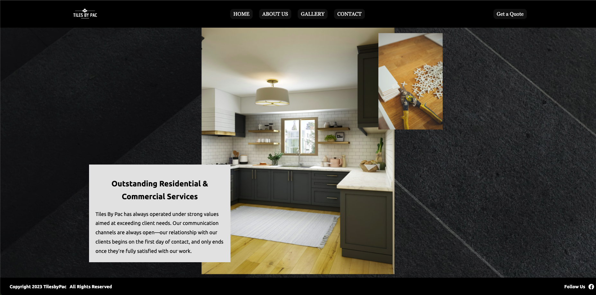
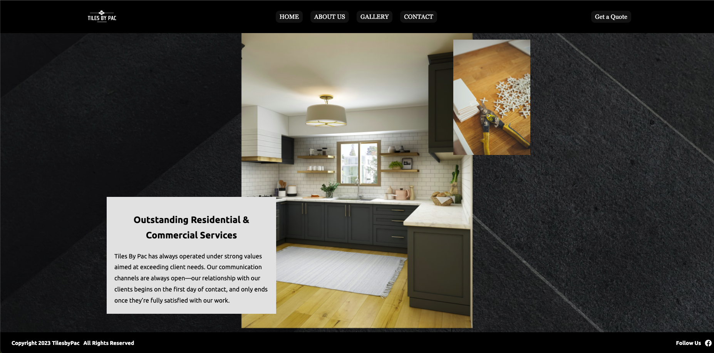
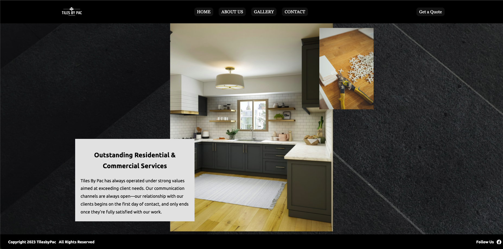

Projects

 

Hello! My name is Moises Gomez I am from New York City. I enjoy building websites and strenghten my skills. I first fell in love with coding when I took an intro course to computer science. I would stay after class with the professor to learn how he created websites. I thought it was impressive how he got websites to work. Thats when I decided to become a software engineer.
I am a Self taught software engineer who practices daily to be ontop of my game. I love working in projects during my spare time. I am passionate for creating responsive website designs. I’ve worked in different type of work environment. From restaurants to working as an EMT to becoming a mail carrier. I am able to adapt to many work environments and work well with others and individually. I love sports specially Football. Lets go JETS! I also love to go out and travel with my family.
